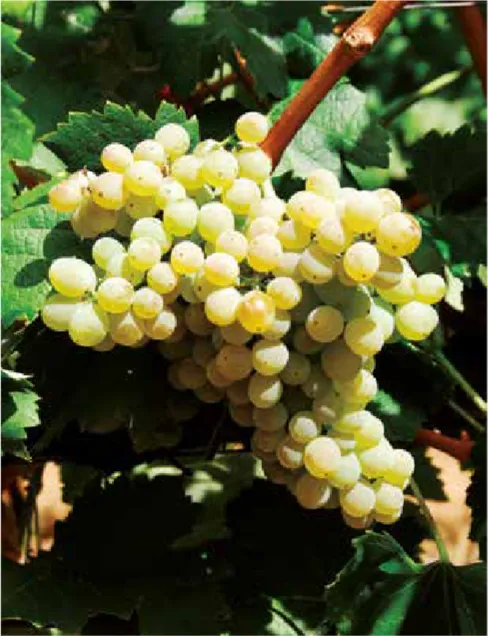

Chapter 3 · The Portuguese grape varieties
Síria (W) / Roupeiro / Códega
Origin:
This variety has existed in Portugal for a long time under different synonyms. The primary name for this variety could only be determined recently with any degree of clarity. The variety appears in the literature in the second half of the 19th century, with mentions by F. Lapa, Vila Maior (1875) and Cincinnato (1900), at which time it was cultivated almost all over the country under different names.
Variety characteristics:
Very high yield variety with good viticultural properties native to almost all regions in Portugal. It produces fruity wines which are ready to drink very soon after fermentation. The best white wines from this variety are produced at high altitude, and enjoyed immense popularity in the 1980s, but lost prominence as a cultivar in regions at lower altitude such as the Tejo and Alentejo, because of limited vineyard longevity. At a young age, Syria is a wine par excellence. As it ages, wine from warm areas shows a marked drop in its aromatic composition.

Regional classification:
DOC quality wine: Porto, Douro, Távora-Varosa, Beira Interior, Tejo, Palmela, all sub-regions of the Alentejo, Lagos, Portimão, Lagoa, Tavira.
IPR quality wine: Chaves, Valpaços.
Regional wine: Trás-os-Montes, the Beira Alta sub-region of Beira Interior, the Estremadura province, Tejo, Terras do Sado, Alentejo, and the Algarve.
Morphology:
Young shoot (form of tip): Open, with general strong anthocyanin colouration, hairs of medium density.
Young leaf: Yellowish green with crimson red edge. Very dense hairs on ventral side.
Young shoot (form of tip): Green buds, nodes, and internodes. Short tendrils.
Inflorescence (sex of flower): Hermaphrodite.
Mature leaf: Medium size, pentagonal, five lobes, medium green blade, profile of blade irregular, slight blistering on upper side of blade; blade undulate at base of petiole, convex teeth. Open V-shaped petiolar sinus, petiolar sinus limited by veins. Overlapping V-shaped upper lateral sinuses, medium prostrate hairs and erect hairs on lower side of blade.
Bunch: Medium to large, shouldered, conical; medium density. Short, half-lignified peduncle.
Berry: Medium to large, uniform, ovate, green yellowish. Berry skin of medium thickness and medium frosting. Flesh colourless, very juicy. Short peduncle.
Phenology:
Time of bud burst: Normal, 5 days after the Fernão Pires.
Flowering: Normal, 4 days after the Fernão Pires.
Berry (colour change): Normal, 9 days after the Fernão Pires.
Berry (harvest ripe): Late, two weeks after the Fernão Pires.
Vegetative and agronomic potential:
Vigour of shoot growth: Medium to high.
Pruning weight: 3 - 4 t/ha.
Shoot attitude (habit): Semi-erect.
Shoot length: Medium, some long.
Tendency to form lateral shoots: Medium.
Rate of multiple bud bursts: 18% of buds
Yield: Index 337. RNSV statistical value: 1.96 kg/vine (Average of at least 40 clones in Pinhel over 3 years).
Yield consistency: Initially high; reduces in subsequent years, thereafter, inconsistent.
Crop uniformity: Uniform.
Winkler Index: 1 = 1.04; 2 =1.38; 3 =1.4 flowers per shoot.
Sensitivity to abiotic factors: Risk of bunches drying out.
Susceptibility to fungal diseases: Susceptible to Oidium and Botrytis, some to Peronospora and Excoriosis.
Susceptibility to Pests: Susceptible to red spider mite.
Bunch size: Large (400g).
Bunch density: Medium.
Berry skin: Thin.
Vineyard conduction system: Single or double Guyot, but adaptable to all types.
Soil requirements: Warm soils with slope (Douro).
Climatic requirements: For variety-appropriate yields, vineyards should be located in a warm, moderate climate, particularly one without early rains in September.
Irrigation: Of benefit, as long as it does not lead to excessive yield.
Incidence of coulure/millerandage: Low.
Spoilage of mature berries: Susceptible in September rain.
Oenology:
Wine type: Table wine, brandy.
Potential alcohol content: Medium (12.5% vol). RNSV statistical value: 11.83% vol. (Average of at least 40 clones in Estremoz over 4 years).
Natural acidity of must: Medium (4 -5). RNSV statistical value: 5.57 g/l (Average of 40 clones in Estremoz over 4 years).
Risk of oxidation of must: None.

Colour intensity of wine: Bright.
Risk of oxidation of wine: Medium, depending on vineyard location.
Aromatic profile: Total terpenoids, 114 μg/l (1997), 170 (1998); total benzenoids: 681 μg/l (1997), 828 μg/l (1998); total norisoprenoids 210 μg/l (1997), 406 μg/l (1998).